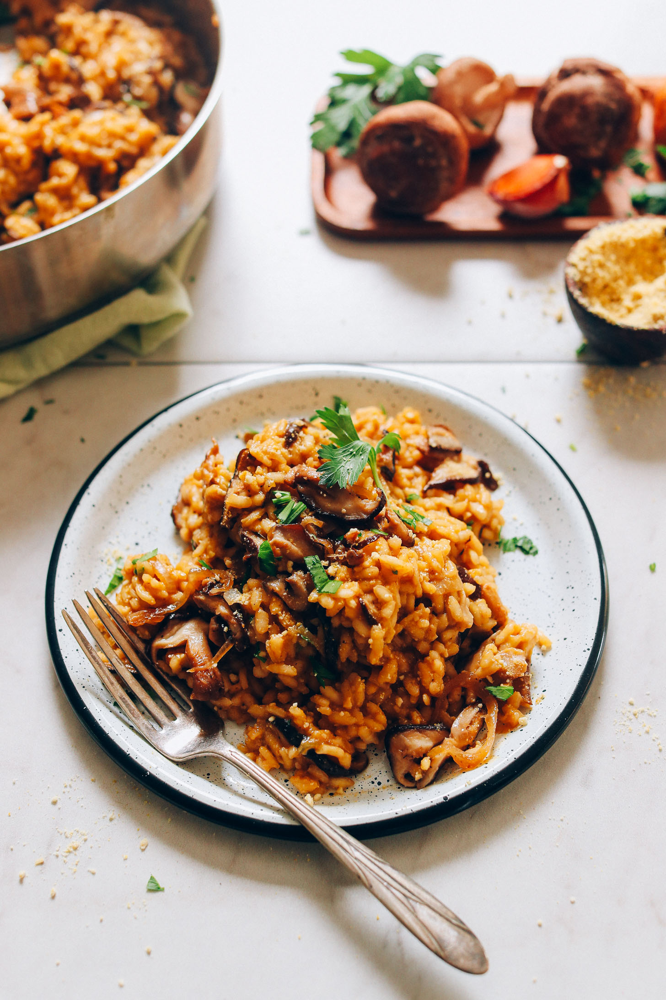

Caramelized Shiitake Mushroom Risotto

A popular comfort food that will warm and feed the entire table
This includes shallot and shiitake mushrooms, which are sautéed until golden brown.
Ideally, the mushrooms start to dry out a little and become deep golden brown
and caramelized for the ultimate hearty mushroom flavor.
Ingredients
- 4 cups of chicken broth
- 2 Tbsp avocado or olive oil (if avoiding oil, sub water)
- 3/4 cup of thinly sliced shallot
- 1/4 tsp each sea salt and black peppe
- 2 cups sliced Shiitake mushrooms, hardy / woody stalked removed
- 1 Tbsp coconut aminos (soy sauce)
- 1 Tbsp chopped fresh thyme
- 1 cup arborio rice
- 1/4 cup dry white wine
- 1/4 cup parmesan cheese
Steps
- In a medium saucepan, heat vegetable broth over medium heat. Once simmering, reduce heat to low to keep warm.
- In the meantime, heat a large pan* over medium heat. Once hot, add oil and shallot and season with a pinch of salt and
pepper. Sauté for 3-4 minutes - stirring frequently. Then add mushrooms and coconut aminos and continue sautéing until
the mushrooms are golden brown and caramelized. Optional: remove some of the shiitake mushrooms from the pan and reserve
for serving - not necessary, but it makes a nice garnish.
- Add the thyme and arborio rice and cook for 1 minute, stirring occasionally. Then add dry white wine and stir gently. Cook
for 2 minutes or until the liquid is mostly absorbed.
- Using a ladle, add warmed vegetable stock 1/2 cup (120 ml) at a time, stirring almost constantly, giving the risotto little
breaks to come back to a simmer. The heat should be medium, and there should always be a slight simmer (adjust heat as
needed). You want the mixture to be cooking consistently but not boiling or it can get gummy and cook too quickly.
- Continue to add vegetable stock 1 ladle at a time, stirring to incorporate, until the rice is 'al dente' - cooked through but
still has a slight bite. This whole process should take about 15-20 minutes.
- Once the rice is cooked through and al dente, remove from heat and add vegan parmesan cheese. Stir to coat (see photo). Taste
and adjust flavor as needed, adding sea salt and pepper to taste or more vegan parmesan to enhance the cheesiness. If
dry at this point, add a little more warmed broth.
- To serve, divide between serving bowls and top with reserved mushrooms, additional vegan parmesan cheese, and a sprinkle of
fresh parsley (all optional).
- Best when fresh, though leftovers will keep covered in the refrigerator for 4-5 days or in the freezer up to 1 month. Reheat
on the stovetop with additional (warmed) vegetable broth until hot.
Return to top
Return to homepage